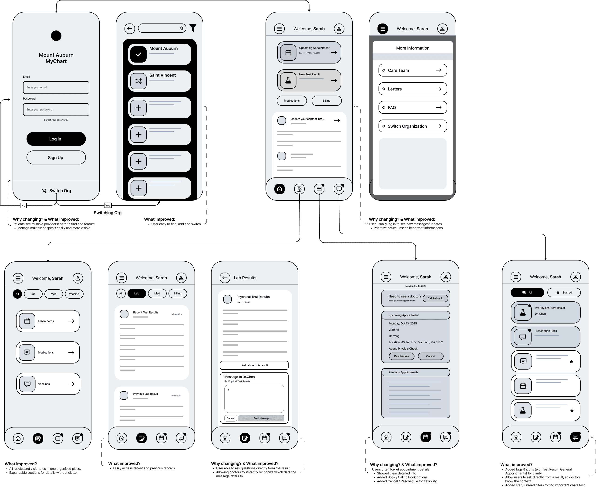
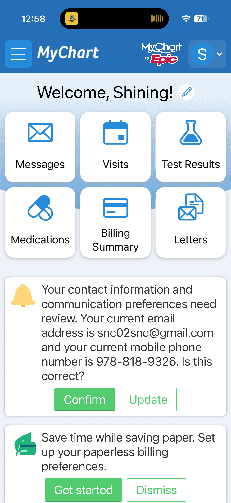
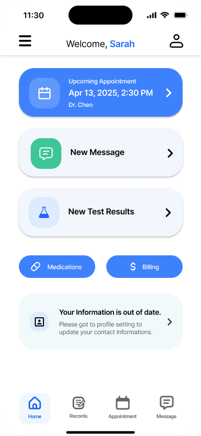
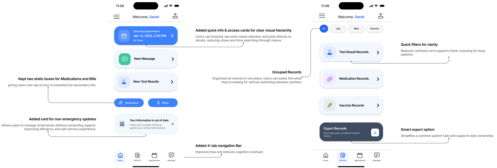
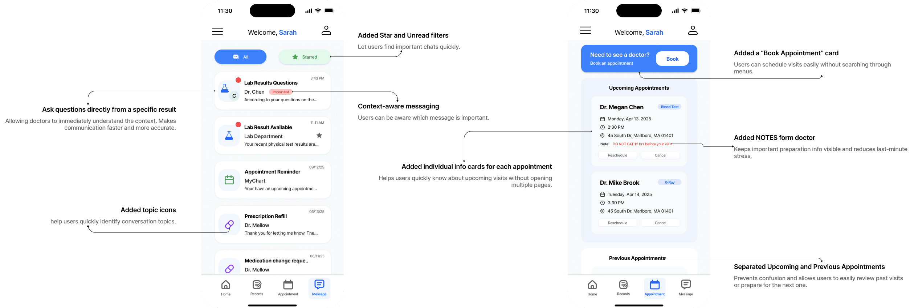
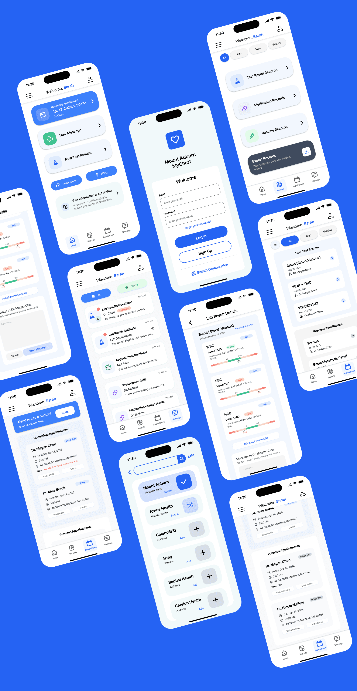

04 / INDEPENDENT CONCEPT · HEALTHCARE
MyChart
A clearer next step for patients.
A patient portal concept that brings common tasks within reach when attention is limited.

THE BRIEF / 60-SECOND OVERVIEW
A clearer next step for patients.
The problem
Patients may arrive worried or distracted. Dense information and unclear navigation add work at a moment when people want to find a result, send a message or book a visit.
The approach
I reorganized the hierarchy around common patient actions and grouped related information. A calmer visual hierarchy supports scanning, while prominent entry points give patients a clear next step.
01 / PROBLEM
Make common health tasks easier to begin
This independent redesign explores information overload, difficult navigation and the stress that can accompany checking health information. The design goal is to make results, appointments and messages easier to find while giving the experience a calmer hierarchy. These concerns formed the design brief and would benefit from direct validation with patients.
02 / DESIGN DIRECTION
Clarity, control and empathy
I used three principles to guide the concept. Clarity means grouping information and making essential content easy to scan. Control means surfacing common actions such as booking and messaging. Empathy means considering the attention and emotional context people bring to a patient portal.
Clarity
Make essential information discoverable.
Control
Give common actions a visible entry point.
Empathy
Account for uncertainty and limited attention.
03 / EXPLORATION
Reorganize the hierarchy before styling it
The early concepts explore navigation, grouping and visible actions. The wireframes make those relationships explicit before color and typography are applied. They provide a way to inspect how patients would find information and move to the next task.

04 / BEFORE & AFTER
A clearer starting point
The side-by-side comparison shows how the concept reorganizes the patient experience. A calmer screen still needs enough context to help people interpret what they find. The next research question is whether the new hierarchy supports understanding as well as navigation.


05 / INTERACTION DESIGN
Connect information to the next action
These design boards document the main functions and changes. The concept puts emphasis on common tasks and contextual communication, with a consistent visual language across the experience.


06 / VISUAL DESIGN
Carry the hierarchy through the screens
The final visual design applies the project’s typography and color system to the proposed patient experience. Reviewing the screen set together helps check whether repeated information and actions remain recognizable.

07 / VALIDATION
Patient testing is pending
The heuristic evaluation informed the proposed hierarchy. Participant testing is not documented. A follow-up task would ask patients to find a recent result, explain what it means and identify the next action.
08 / REFLECTION
Evaluate understanding with the task
The project centers on empathy, simplification and contextual communication. A follow-up evaluation would ask patients to find a recent result, describe what they understand and identify a relevant next action. Those observations would guide further iteration on both the navigation and the information hierarchy.